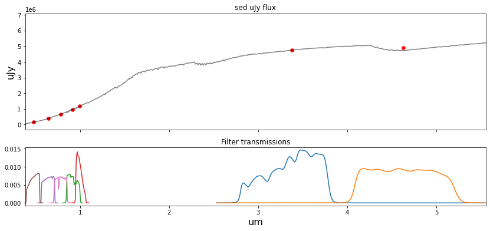

#hide
write_pickle = False
if write_pickle:
#### Converting numerious filter spec files to pickle files. To keep package loading simple
####
raw_filter_specs_dir = '/lcrc/project/cosmo_ai/nramachandra/Projects/Hydro_paint/filter_specifics/'
survey_filter_structure = load_survey_filters(filtdir=raw_filter_specs_dir+'LSST', to_um=True)
out_filter_pickle = '../watercolor/data/filter_specifics/'
with open( out_filter_pickle + 'LSST' + '.pickle', 'wb') as f:
pickle.dump(survey_filter_structure, f)
####
survey_filter_structure = load_survey_filters(filtdir=raw_filter_specs_dir+'cosmos', to_um=True)
with open( out_filter_pickle + 'COSMOS' + '.pickle', 'wb') as f:
pickle.dump(survey_filter_structure, f)
####
survey_filter_structure = load_survey_filters(filtdir=raw_filter_specs_dir+'SPHEREx', to_um=True)
with open( out_filter_pickle + 'SPHEREx' + '.pickle', 'wb') as f:
pickle.dump(survey_filter_structure, f)
####
survey_filter_structure = load_survey_filters(filtdir=raw_filter_specs_dir+'WISE', to_um=True)
with open( out_filter_pickle + 'WISE' + '.pickle', 'wb') as f:
pickle.dump(survey_filter_structure, f)Module: Filter convolution
Change from narrow-band SED to colors based on Telescope specification
load_filter_single
load_filter_single (filtfile:str=None, norm:bool=True)
| Type | Default | Details | |
|---|---|---|---|
| filtfile | str | None | Individual filter files |
| norm | bool | True | Bandpass normalization condition |
| Returns | tuple | Wavelengths, bandpass values, central wavelengths, filter name |
clip_bandpass_values
clip_bandpass_values (bandpass_wavs:numpy.float32=None, bandpass_vals:numpy.float32=None)
| Type | Default | Details | |
|---|---|---|---|
| bandpass_wavs | float32 | None | Bandpass wavelengths |
| bandpass_vals | float32 | None | Bandpasses |
| Returns | tuple | Clipped bandpass wavelengths, clipped bandpass values |
load_survey_filters
load_survey_filters (filtdir:str='data/filter_specifics/LSST', to_um:bool=True)
| Type | Default | Details | |
|---|---|---|---|
| filtdir | str | data/filter_specifics/LSST | Input directory with all filter definitions |
| to_um | bool | True | True/False to convert wavelengths to microns |
| Returns | tuple | Central wavelengths, Bandpass wavelengths, Bandpass values, filter names |
load_survey_pickle
load_survey_pickle (survey:str='LSST')
| Type | Default | Details | |
|---|---|---|---|
| survey | str | LSST | Survey |
| Returns | tuple | Central wavelengths, Bandpass wavelengths, Bandpass values, filter names |
photometry_from_spectra
photometry_from_spectra (central_wavelengths:<built- infunctionarray>=None, sed_um_wave:<built- infunctionarray>=None, sed_mJy_flux:<built- infunctionarray>=None, bandpass_wavs:<built- infunctionarray>=None, bandpass_vals:<built- infunctionarray>=None, bandpass_names:<built- infunctionarray>=None, interp_kind:str='linear', plot:bool=True, clip_bandpass:bool=True)
| Type | Default | Details | |
|---|---|---|---|
| central_wavelengths | array | None | Central wavelengths |
| sed_um_wave | array | None | SED wavelengths (in microns) |
| sed_mJy_flux | array | None | SED fluxes (in mJy) |
| bandpass_wavs | array | None | Bandpass wavelenths |
| bandpass_vals | array | None | Bandspass values |
| bandpass_names | array | None | Names of the bandpasses |
| interp_kind | str | linear | Interpolation type |
| plot | bool | True | Plotting SEDs with filter convolution |
| clip_bandpass | bool | True | Clip bandpass condition |
| Returns | tuple | Fluxes, Apparent magnitudes, Band fluxes |
SURVEY_STRING = 'WISE'
#| hide
##### Load survey filters
# central_wavelengths, bandpass_wavs, bandpass_vals, bandpass_names = load_survey_filters(filtdir='/lcrc/project/cosmo_ai/nramachandra/Projects/Hydro_paint/filter_specifics/'+SURVEY_STRING, to_um=True)
central_wavelengths, bandpass_wavs, bandpass_vals, bandpass_names = load_survey_pickle(SURVEY_STRING)
##### Compute bandpasses
sed_um_wave = spec_wave_ssp/1e4
sed_mJy_flux = redsh_spec
flux_survey, appmag_ext_survey, band_fluxes_survey = photometry_from_spectra(central_wavelengths,
sed_um_wave,
sed_mJy_flux,
bandpass_wavs,
bandpass_vals,
bandpass_names,
interp_kind='linear',
plot=True,
clip_bandpass=True)